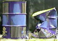
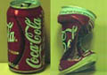
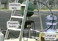
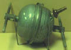
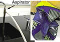
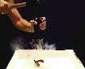
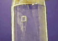
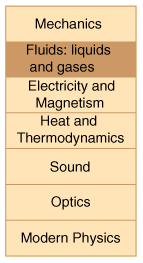

Index to Video/Demonstrations
Fluids: Liquids and Gases
|  | Atmospheric pressure: crushing a steel drum. |
|  | Atmospheric pressure: crushing a coke can. |
|  | Atmospheric pressure: a model Savery engine. |
|  | Atmospheric pressure: a model of the Madgeburg hemispheres. |
|  | Atmospheric pressure: crushing a steel drum with an aspirator on a faucet. |
|  | Pascal's principle: dropping the bottom out of a bottle. |
|  | Cartesian diver: increasing inside pressure compresses air in inverted tube, decreasing its buoyancy. |
|

|